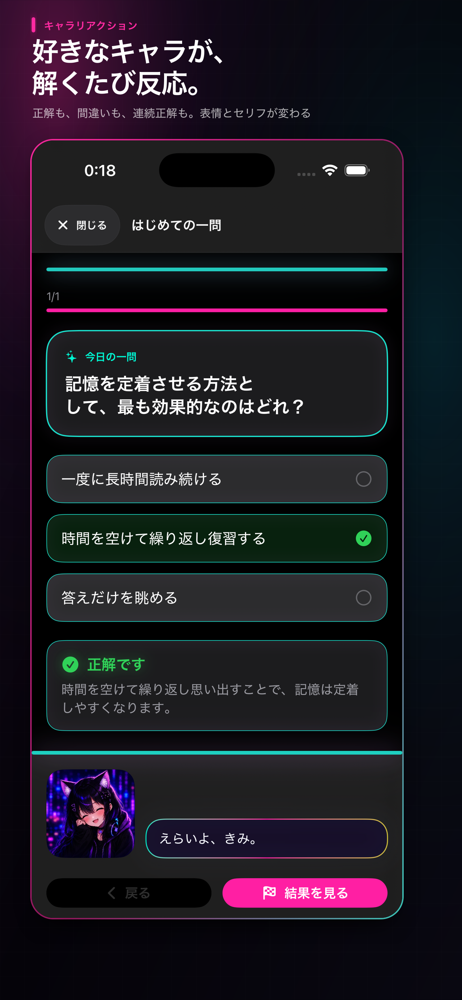

答えるたび、表情とセリフが変わる
正解・不正解・連続正解に合わせてキャラがリアクション。ひとりの勉強に小さな手応えが生まれます。
Your character. Your study partner.
キャラ勉は、好きな画像・名前・セリフで作ったキャラや“推し”と、自分だけの問題集で学べるiPhone向け学習アプリです。
iPhone対応・基本無料

Why CharaBen
好きなキャラと演出で、最初の1問に手を伸ばしやすい学習体験をつくりました。
正解・不正解・連続正解に合わせてキャラがリアクション。ひとりの勉強に小さな手応えが生まれます。
画像や表情、名前、セリフを自分好みに設定。プリセットですぐ始めることもできます。
演出を「派手」にすると、問題文や選択肢、結果までネオンに。いつもの問題集が没入感のある画面に変わります。
ChatGPT等で作った問題をまとめて取り込み。アプリがAIへ直接接続することなく、作成時間を短縮できます。
学習記録や復習状態を端末内に保存。ホーム画面のウィジェットでもキャラが次の学習を待っています。
Private by design
問題集、学習記録、キャラクター画像や音声は、基本的に端末内で管理。アカウント登録も独自のアクセス解析もありません。
Support
不具合のご連絡やご質問はメールで受け付けています。利用端末、iOS・アプリのバージョン、発生した状況を添えていただくとスムーズです。
Privacy policy
最終更新日：2026年8月9日
本アプリは、問題集、問題と解答、学習記録、復習状態、フォルダ・アーカイブ・ピン留めの設定、キャラクター設定、名前、表示用画像・表情画像・音声、表示・通知設定、オンボーディングの完了状態、バックアップに必要な情報を端末内に保存します。
これらは学習、表示、復習、バックアップおよび復元のために利用し、開発者が運用するサーバーへ送信・収集しません。アカウント登録や独自のアクセス解析SDKは使用しません。外部ストレージを保存先に選んだ場合は、各サービスのポリシーに従います。
運営費用のため、Google LLCのGoogle Mobile Ads SDK（AdMob）によるバナー広告を表示します。広告事業者は、IPアドレスと大まかな地域、端末・SDK識別子、技術情報、広告の表示・操作情報、診断・パフォーマンス情報を広告配信、不正防止、計測、品質改善等に利用する場合があります。
公開初期はATTの許可を求めず、IDFAによる追跡型広告を目的として利用者を追跡しない方針です。詳細はGoogleプライバシーポリシーとGoogle Mobile Ads SDKのデータ開示をご確認ください。
広告を恒久的に非表示にする非消耗型アプリ内購入も提供します。決済はAppleが処理し、開発者はカード情報を受け取りません。
学習リマインドを有効にした場合、端末上のローカル通知を使用します。通知内容と設定を開発者のサーバーへ送信しません。
キャラクター画像、表情画像、音声として選択したファイルは端末内に保存し、開発者へ送信しません。問題JSONやバックアップも端末上で処理します。
ChatGPT等で問題JSONを作成するためのプロンプトをコピーできますが、本アプリは外部AIサービスへ直接接続しません。外部サービスに入力した情報は、そのサービスのポリシーに従います。
広告配信事業者による前記の取り扱いを除き、学習内容、キャラクター設定、画像、音声、バックアップ内容を第三者へ提供しません。
保護者の同意が必要な年齢の利用者は、適用法令に従い保護者の関与のもとで利用することを想定しています。広告を含むため、App Storeの年齢レーティングと端末のコンテンツ制限をご確認ください。
お問い合わせはcharaben.support@gmail.comまで。法令、広告SDK、機能の変更に応じて本ポリシーを改定することがあります。重要な変更は本ページまたはアプリ内でお知らせします。